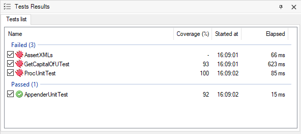

This feature is useful to see what coverage a test does of his called objects for a particular test execution. Set upTo use it, the first thing to do is enable Code Coverage for your environment. Once it's enabled, the test objects may need to be rebuilt. You can perform a "Rebuild All Tests" operation under the "Test" menu to achieve that. Test Coverage informationFinally, you can run the tests and, after the execution is finished, you should see something like the image above.  Coverage percentage displayed in column Coverage (%) is calculated as follows: Given a test, coverage information about all its called objects (Procedures and Data Providers) is summarized and calculated taking into account only direct relative objects (the ones called directly by the test). When a test doesn't call any other testable object, a minus sign is shown (e.g. test AssertXMLs in the previous image). Example 1There is a test X that calls to procedure A and data provider B. If during the execution of test X, 8 of 10 lines of object A and 2 of 10 lines of object B were executed, the coverage for that test for that execution will be 50% ( ((8 + 2) /(10 + 10)) * 100); regardless of any other object that could be called by objects A or B. Note: In case you want to view even more details about coverage, you always can open Code Coverage window and load the file from the file system. Note that the path of the generated code coverage file by GXtest is logged in the GeneXus IDE log. Example 2There are 2 tests (test1 and test2) that call a procedure with an if / else sentence. The test1 covers 50% of the procedure and test2 covers the other 50%. If both tests are executed together the total coverage for the procedure will be 100%. This is, coverage for each unit test will be displayed as 100%. On the other hand, if you run a single test of them, the displayed coverage will be displayed as 50%. AvailabilityThis feature is available since GeneXus 16 upgrade 8.
|